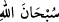
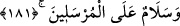

Yahut izzet Allah Teâlâ’nın aziz kıldığı peygamberlere ve diğer izzet sahibi kullara
mahsustur. Buna göre izzet zâtî değil, hâdis ve sonradan olup kullar arasında olur. Bu
mânâda izzet her ne kadar Allah Teâlâ’dan başkasıyla kaim olan bir sıfat ise de yine
Allah’ın mülk ve memlûkü olup Allah’a mahsustur. Allah onu dilediği yere koyar. Allah
Teâlâ şöyle buyuruyor: “(Resûlüm!) De ki: Mülkün gerçek sâhibi olan Allah’ım!
Sen mülkü dilediğine verirsin ve mülkü dilediğinden geri alırsın. Dilediğini
yüceltir, dilediğini de alçaltırsın. Her türlü iyilik senin elindedir. Gerçekten sen her
şeye kadirsin” (Ali İmran 3/26).
Yine bu kavl-i ilâhîde Allah Teâlâ’nın selbî ve izâfî sıfatlarına işaret edilmektedir.
Allah Teâlâ şöyle buyuruyor: “Büyüklük ve ikram sâhibi Rabbinin adı yücelerden
yücedir” (er-Rahmân 55/78). Bunun izahı şudur: Allah Teâlâ’nın “Senin izzet sâhibi
Rabbin, onların isnat etmekte oldukları vasıflardan yücedir, münezzehtir” kavli, el-
Celâl sıfatı gibi selbî sıfatlara işaret etmektedir. Zira “Rabbimiz ortak ve benzerlerden
münezzehtir” ve “Rabbimiz ortak ve benzerlerden yücedir” sözlerinin ifade ettiği mânâ
aynıdır.
“Senin izzet sâhibi Rabbin” kavli ise ikram gibi izâfî sıfatlara işaret etmektedir.
Selbî sıfatların varlık ve ispatında Allah Teâlâ’nın bizzat kendi varlığı yeterli olduğu
için selbî sıfatlar takdim edilmiştir. İzâfî sıfatlar ise böyle değildir. Bu sıfatların
gerçekleşmesi için başkasının var olması gerekmektedir. Çünkü izâfî sıfatlar, o sıfatın
izafet ve nispet edileceği bir varlık olmadan mevcut olmaz.
Şeyh İzzeddin b. Abdisselâm der ki: “
” kelimesi, Allah Teâlâ’nın zâtından ve
sıfatlarından bütün ayıp ve noksanlıkları selb ve izâle etmeye şâmil olan bir ifadedir.
Allah Teâlâ’nın her ayıptan temiz olan mânâsında “el-Kuddûs”, her âfetten selim ve
kurtulmuş olan mânâsında “es-Selâm” ismi gibi bütün selbî sıfatlar bu kelimenin mânâ
ve muhtevasında mevcuttur. Böylece biz “
” sözüyle idrak edip anladığımız ve
kavradığımız her ayıp ve noksanlıktan Allah Teâlâ’yı tenzih etmiş olduk. Sonra bütün
nebi ve resuller Allah Teâlâ ile kullar arasında vâsıtalar oldukları için Allah Teâlâ
onların da şan, şeref ve itibarlarının yüceliğine tenbihte bulunarak şöyle buyurmuştur:
181. Gönderilen bütün peygamberlere selâm olsun!
Allah’ın risaletini ümmetlere tebliğ etmek ve ümmetlerin muhtaç olduğu dînî ve
dünyevî işleri onlara beyan etmek üzere “Gönderilen bütün peygamberlere selâm”
yani selâmet, her türlü kötülüklerden kurtuluş ve bütün hâcet ve maksatlara ulaşarak
necat bulmak onların üzerine “olsun!”
Bu resullerin ilki Âdem (a.s.) sonuncusu da Hz. Muhammed (s.a.)’dir. Geride bazı
peygamberlere özel olarak selâm edildikten sonra bu söz genel olarak bütün